2016
Switzerland
One of my favorite places I have visited.
I was on an intercultural exchange in the Pestalozzi Children's Village, a small place
near Zurich.
I visited Zurich, Luzerne, Technorama in Wintherthur and St. Gallen
It was a 14-day trip there and I so much fun.
Don't have any pics since they were on a very old phone that is now in the trash.
10/10 would definitely go back.
2017
Venice and Verona
This was my first trip with mom, who was visiting these places again.
Venice is one of my favorite places that I have visited. I loved the canals and all the
vibes.
I didn't take a gondola ride when I was there for the first time, but I took one last
year.
Verona was also fun. The colosseum, the house of Romeo and Juliet and other landmarks.
Photos are also missing since I didn't really take any photos there.
10/10 - went back, don't know if I am going to do it again.
2018
Budapest and Vienna
Another trip with mom.
Loved Budapest. Loved listening to Johann Strauss while having a boat ride on the Danube.
10/10 experience
Loved all the architecture and all the history behind it. Especially for the Lions and
the architect.
Vienna was fun as well. Schoenbrunn was HUGE. All the architecture and all the history
was fantastic.
Loved Erste Bezirk. First time seeing so much stores in one place. Didn't have time to go
though them all.
Apparently Snapchat decided to delete all of my photos so that's why I don't have any.
9/10 - probably gonna go back to both places, just don't know when
2019, 2020 and 2021
Pause :(
2019: First year of high school. Didn't have an opportunity to go anywhere.
2020: Planned to go to Prague, but COVID hit, so another year going nowhere.
2021: No plans for the year as well.
2022
April:
Madrid
Went on an Erasmus+ Youth Exchange where I spend 2 weeks near Madrid. Spent in total 4
days in Madrid.
Met lots of new people from other countries and different cultures. Erasmus+ is a 11/10
experience.
Here's some pictures:
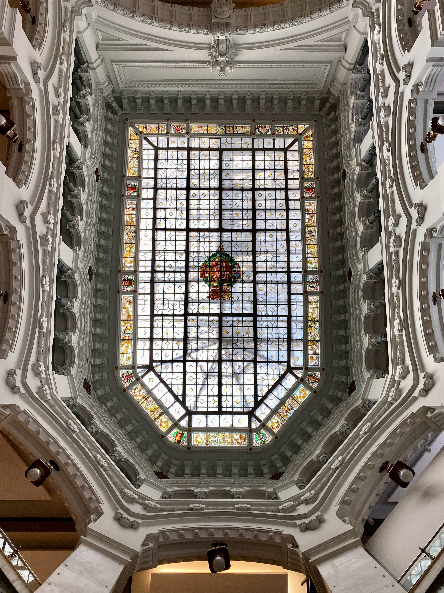
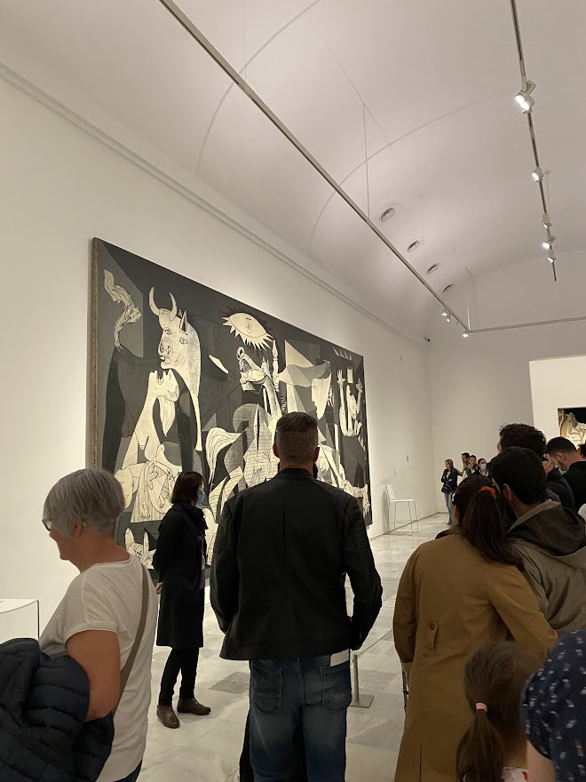
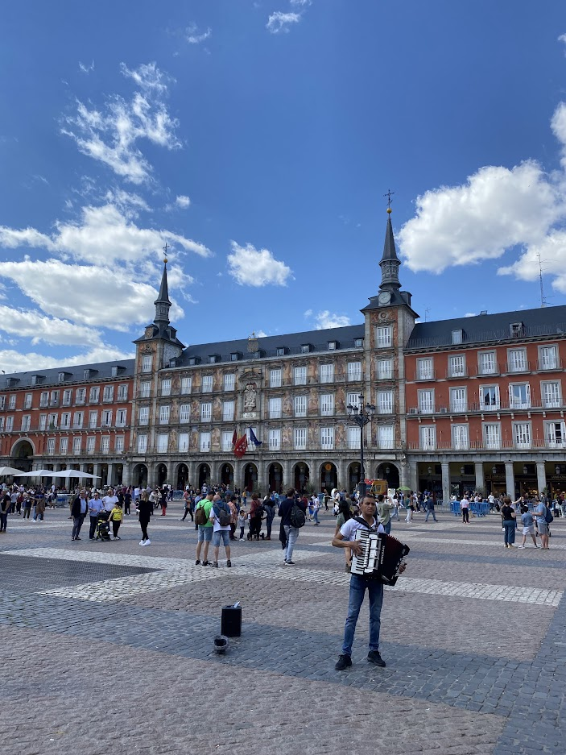
June/July:
EuroTrip
Travelled through Venice, Verona, Nice, Cannes, Monaco. For the most part we stayed in
Lloret de Mar and we went to Barcelona twice.
It was a bus trip and we went over 8000km. Suffered from sleep deprivation but it was
fun.
We partied, we bathed, we had lots of fun.
Didn't like Barcelona as much as Madrid.
While the whole experience is a 10, the bus riding brings it down to an 8.
More pics:
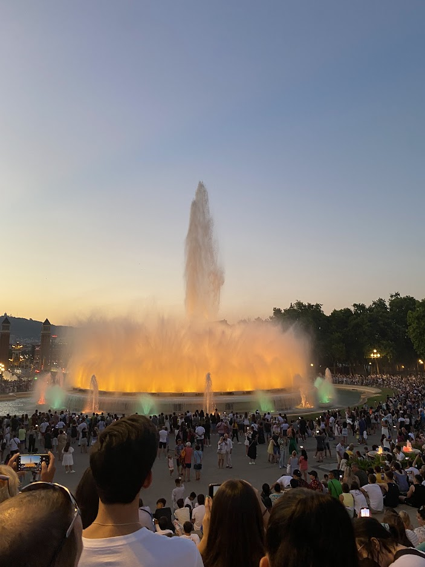
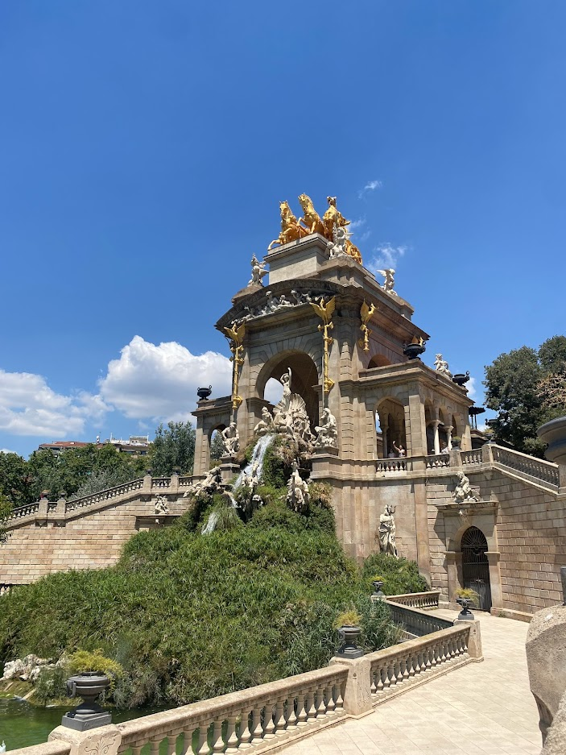
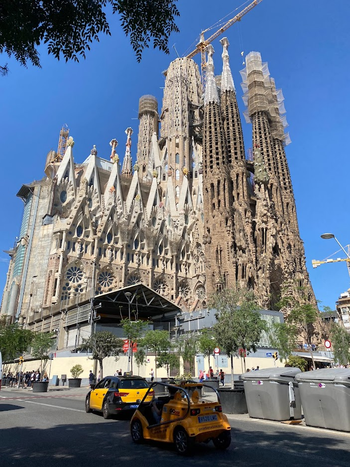
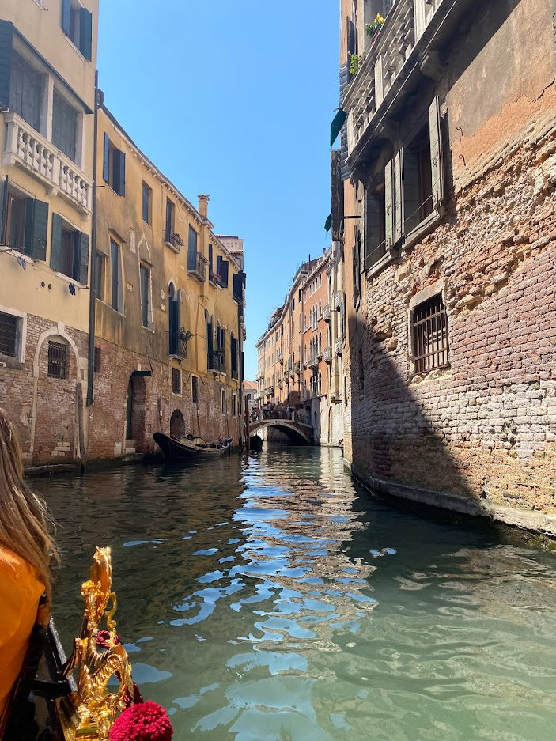
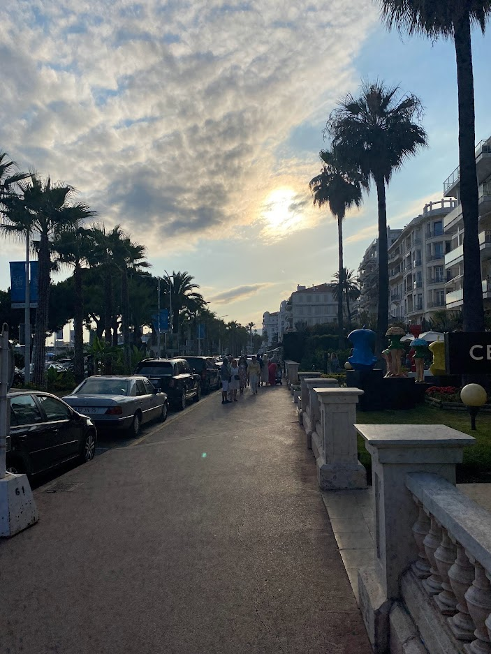
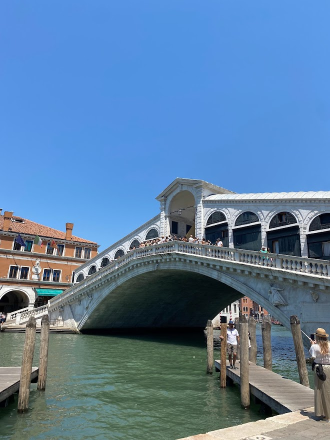
New Years:
Belgrade
We visited Skadarlija, Knez Mihailova and drank lots of medovacha.
The parties were great.
Probably going back there this year.
Pics:
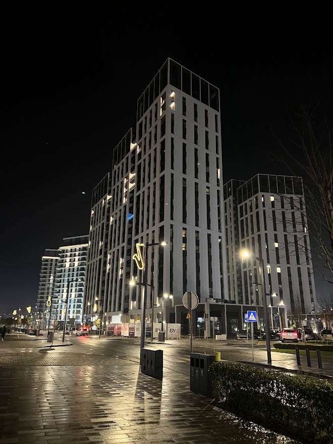
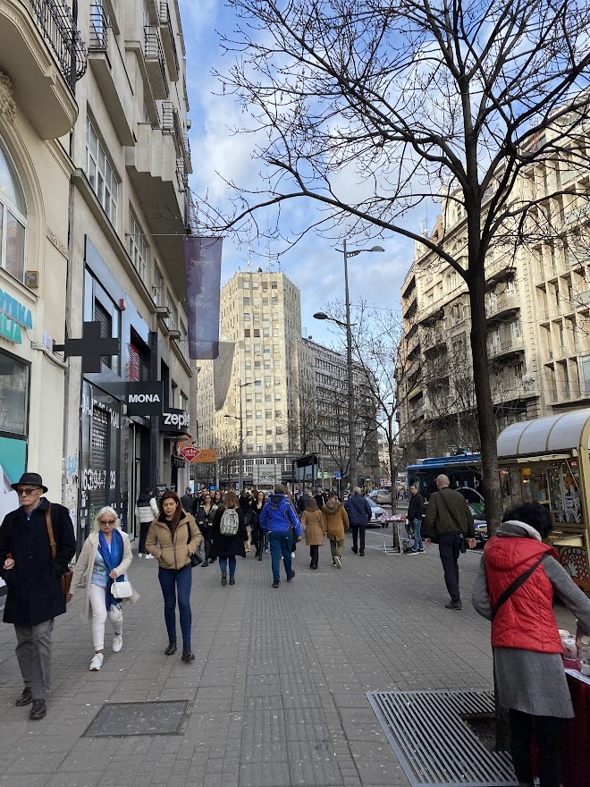
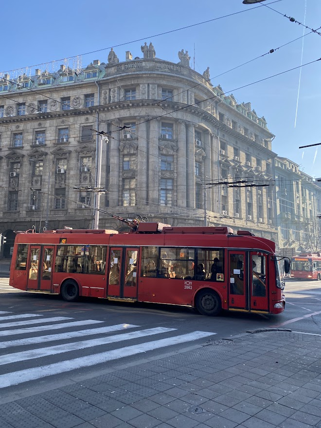
2023
Rotterdam and Amsterdam... Soon
Italy... Maybe
Belgrade... Maybe